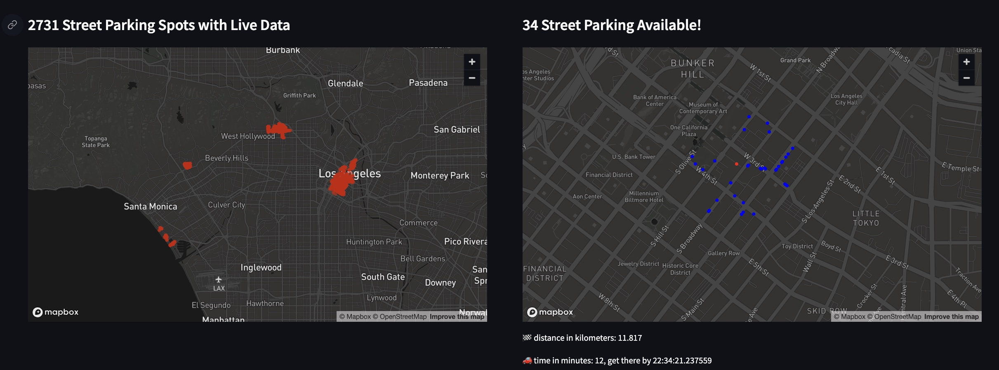

Your Solution To Street Parking in Los Angeles
Nov 19, 2023
Parking in LA is a real problem. If you're around the Korea Town/Silverlake area like me, you've most likely experienced some difficulties with parking. In my case, it's even more challenging as I don't have a personal parking spot in my
apartment building so even at night after a long day, I need to look for a street parking spot. It took me just a couple hours in LA to realize that parking was going to cause me a lot of headaches and that I needed to look for a solution.
So how can I solve this problem and make my life, and maybe others, easier in LA? I decided to build a tool to help me find available spots and would optimize the routes I take anywhere so I spend less time looking for parking.
Turns out that the LA City government have a free API that gives access to the Parking Meter locations and occupancy updated with high frequency in the LA City.
So I leveraged that data to find the current occupancy (VACANT or OCCUPIED) of each of the 2807 parking meters that they provide data for.
So the tool works like this: You go to the website, you input: the place you're coming from, the place you're headed to, and how far you're willing to park from your destination in meters
You are going to have two maps right below your input widgets: On your left you'll see all the metered street parking spots that we have data for, and on the right you'll see the available parking spots within radius of your destination as well as the distance and time to get to your destination.
